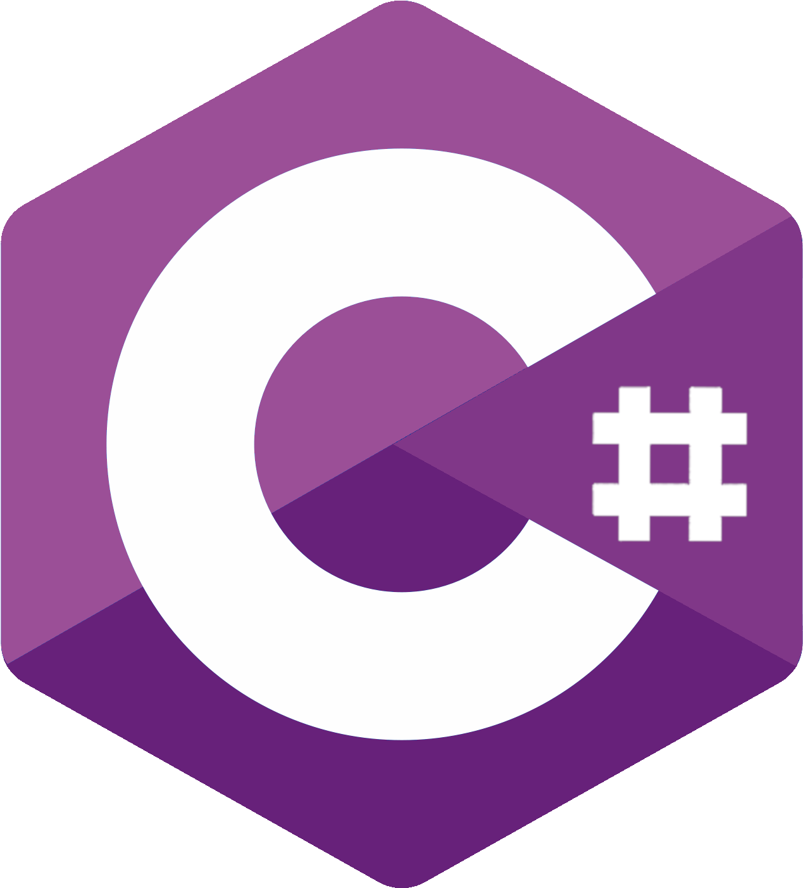
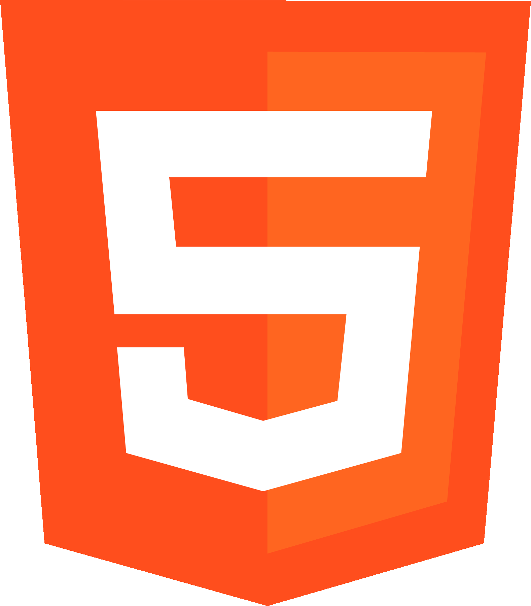
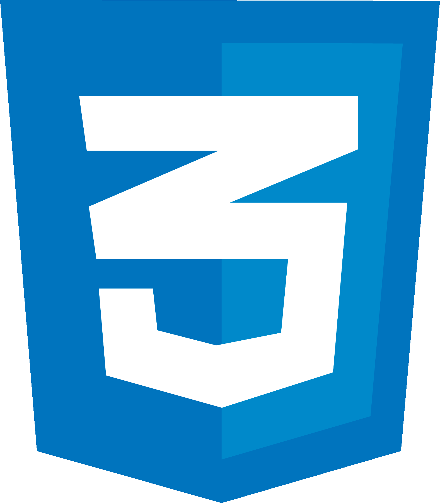
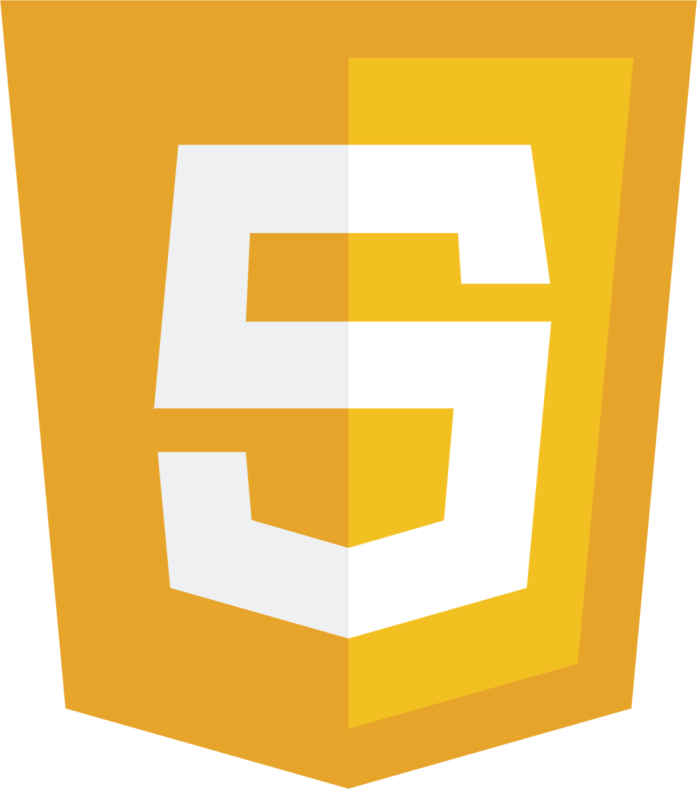

© Jack Sebben 20XX. All rights reserved.

Jack Sebben - Computer Science BS at Rochester Institute of Technology.
Graduating in December 2025.
With multiple years of experience in software development and a history of game design, I am looking for a full-time position starting 2026.







If you are interested in hiring, or simply want to get in contact, you can shoot me an email at johnjacksebben@gmail.com.
Additional Details - In my free time, I enjoy developing video games, typically small demos or projects I’ve made alongside friends. Automation and embedded systems have always intrigued me, and I would love to explore those skills. Some of my classes involve other, related fields of study, such as mathematics or robotics. A passionate experience for me was placing in regionals and going to state for my school’s math team. Around the same time, my robotics teams also went to state with me as the lead programmer. As a personal hobby, I’ve been learning the German language for about a year now. I visited the country last summer through my degree's study abroad program, which was an entirely new and exciting opportunity for me.
I have prior experience with numerous small businesses in the field of software development.

Although ongoing, the majority of my experience has been with the design of a specific product, rather than development. Experiencing the transition between these was beneficial when it came time to create the physical product: a generative-AI service with proprietary technology that creates the forms for a tedious documentation package.
Most of my time was spent maintaining and rebuilding a legacy C# calibration application. This desktop app was meant to be compatible with a range of embedded medical devices, one of which I tested with. Along with several senior developers and a QA team, we continued upkeep of the software, adding new functionalities or fixing old ones. The second half of my work contributed to the development of a new embedded system. I built firmware in C++ for an embedded Linux environment. These were the same devices used with the desktop application.
Originally, I was brought on as a software intern for L Street Corporation. One of the company’s subsidiaries, Pixit, is a lost and found web application. After a sudden disappearance of the main developer (not kidding), I stepped into the role of sole maintainer of the codebase. The application was built with Ruby on Rails, which I had only played with before. A little self-teaching later, I resolved several critical bugs persisting for over a month. I continued working primarily for Pixit, fixing bugs for the few months of my internship. This was also the first time I had used Git in a professional setting, which helped with maintaining the code. I had to adapt quickly and troubleshoot unfamiliar issues, but I delivered.
"Jackseb FPS" is a multiplayer first-person shooter (FPS) prototype developed using C# in Unity. The main game mode is a free-for-all deathmatch, with the game supporting multiple online players. The game includes various weapons, such as assault rifles, shotguns, pistols, and more. The game's network code is optimized for low latency online play, including basic matchmaking services for easy match accessibility.
Speedrun Maze is a singleplayer maze game developed using C# in Unity. The game involves navigating through a series of mazes while being stalked by a creature inhabiting every level. Players must press buttons located throughout the maze to unlock the final door for each level and progress to the next. The game features multiple difficulty levels, each with unique maze designs and unique attributes for the enemy. The game's AI system is designed to provide challenging gameplay by tracking the player's movements and adapting to their pathing throughout the level.
Pongun is a modification of the original 1972 Pong video game. Developed in C#, Pongun is a 2D singeplayer sports and top-down shooter game. The player must compete against the computer to hit the ball into its "goal" on the edge of the screen, similar to the original. Howewever, both the player and computer have a cannon equipped change the trajectory of the ball. The game was made for a Game Jam in only 72 hours, but this simple concept is intriguingly fun. I plan to revisit this game soon for a remake, polishing the bugs and game design concerns of its predecessor.
This academic e-store project is a web-based application built using the Angular framework for the frontend and the Spring framework for the backend. The application allows users to purchase various country flags and customize their own flags using predetermined designs. This project involved learning the Agile method of software engineering alongside other team members who also contributed.
The music database project is an academic web application that allows users to create accounts, log in, search for songs, play songs, create playlists, add friends, and view popular songs. The frontend of the application is implemented in Java with a command-line interface. The backend of the application is the relational database management system (RDBMS) of PostgreSQL, which uses SQL to store and retrieve user information, songs, playlists, and friend relationships. The application follows a client-server architecture, where the Java-based frontend interacts with the RDBMS backend to fetch and display data to the user.